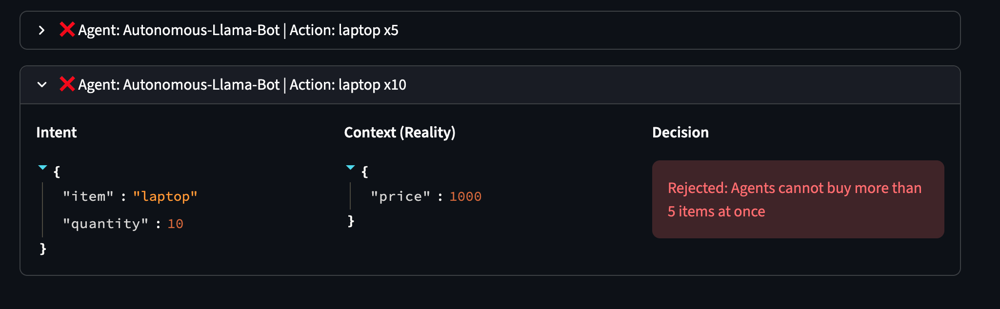
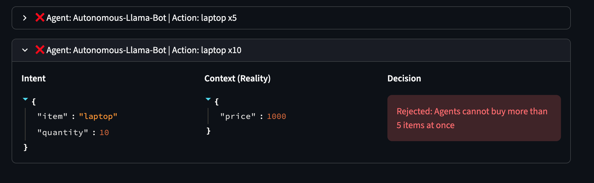

Building Deterministic Guardrails for Autonomous Agents
The Problem: Reasonableness Gap
This is a problem I have been thinking about for some time now. Modern distributed systems no longer just serve human users, they interact with autonomous agents capable of generating adversarial, poorly scoped or ‘hallucinated’ requests at scale. Traditional access control models like RBAC, IAM policies assume that callers are acting in good-faith and fail to encode reasonableness as a first-class concern.
Most access control systems are able to answer basic questions like
Who are you, and what are you allowed to do?
They don’t answer
Is this request reasonable, safe or appropriate in context?
My Personal Experience as an Engineer
In many engineering discussions, a predictable pattern tends to emerge. You’ll be talking about a carefully considered design with clear boundaries and fail-safes and the question will inevitably come up: Can we just use an LLM for this instead?
I usually feel reluctant when this happens, not because I hate new tech but because I have read too many horror stories. The most notable one that comes to mind is the Replit incident in 2025 where an autonomous agent ended up deleting a production database.
If I’m being completely honest, my reluctance also comes from a place of guilt. I’ve fallen into the trap and manipulated agentic bots to do the ‘dirty work’ for me, tasks I would never officially approve an agent to handle because I know deep down, the guard rails don’t exist.
I waited for some time for a framework to come along to fix this problem so I’m sharing a solution that I think can help instill control back into the picture.
The Solution: Contract-Based Access Control
I have been experimenting with the idea of contract-based access control that treats ‘reasonableness’ as a first-class citizen through agentic gateways. I took a lot of inspiration from the deterministic and auditable nature of Solidity smart contracts, shifting the security boundary from the caller to the data custodian. In this architecture:
- Callers are explicitly untrusted (zero trust policy)
- Intent is mediated, not accepted, through state-aware contracts
- Authority is defined and enforced by custodians of data
- Decisions are deterministic, auditable, and non-inferential. No more vibing y’all!
Disclaimer - this system won’t apply in every case. But it’s important to consider when callers are autonomous agents, requests can be vague, data is highly sensitive or the cost of messing up is severe.
The Big Picture and Major Players

1. Autonomous Agent (The Untrusted Caller)
- Role: The Subject of the contract.
- Technology: OpenAI, Google Gemini, Claude
- Description: An autonomous, goal-oriented actor (LLM-based bot, automated script, or service) that generates Intent. Because it is “untrusted” and “agentic,” its requests are assumed to be stochastic (probabilistic) and potentially out-of-scope. It doesn’t just send commands; it attempts to achieve outcomes.
2. Agentic Gateway (The PEP - Policy Enforcement Point)
- Role: The Orchestrator and Shield.
- Technology: Python, JavaScript,
- Description: A high-performance shim that sits directly on the request path. It is responsible for Interception and Enforcement. It does not make the decision itself; instead, it “assembles the case” by gathering the Contract and Context, then strictly enforces the Engine’s verdict. It is fail-closed, meaning if any part of the evaluation fails, the request is killed.
3. Contract Store (The Legislature)
- Role: Static Semantics.
- Technology: YAML, or a more rigid Solidity-like contract language that I am working on
- Description: A version-controlled repository of Contract Definitions (YAML). These define the “laws” of the system as dictated by data custodians. They encode types, allowed actions, and hard constraints. Unlike IAM roles, these are resource-centric and describe the “Reasonable Boundaries” for any actor attempting to interact with a specific data set.
4. Contract Evaluation Engine (The PDP - Policy Decision Point)
- Role: The Pure-Function Judge.
- Technology: n8n
- Description: A deterministic, non-inferential engine. It is a “pure function,” meaning it performs no I/O itself. It receives the Intent, Contract, and Context as a single bundle and calculates the outcome. Because it is pure, it can be mathematically verified and is immune to side-effect bugs.
5. Control Pit (The Governance Ledger)
- Role: Ledger for events.
- Technology: redis
- Description: A specialized event-store that tracks agent behavior over time. It transforms “Point-in-time” requests into “Context-aware” history, allowing the system to enforce constraints across multiple interactions (e.g., rate limits, daily quotas, or behavioral drift).
6. Target Service (The Protected Resource)
- Role: Functional Execution.
- Technology: API, microservice, database
- Description: In this architecture, the Target Service is “dumb” regarding reasonableness—it assumes that if a request reached it, the Gateway has already verified the intent as safe and authorized. This keeps the backend code clean and focused on features rather than security guardrails.
What it looks like in practice
I’m usually not one for theories and don’t assume an idea will work until I’ve actually gotten it up and running myself. So I built a lightweight POC that intercepts calls from autonomous agents to a mock service I set up.
- Our LLM of choice is ollama since I wanted a locally running instance and didn’t want to spend money.
- The agentic gateway is a simple Python server that pulls relevant contracts based on the user request and calls the contract evaluation engine
- The contract is written in Solidity-like semantics. I didn’t have time to build my own contract language so YAML for now
- The evaluation engine is an n8n workflow that exposes a webhook to run our reasoning logic against user intent.
- The intent evaluation gets published to redis where it can be used for auditing or even as a reference to understand how certain agents have been interacting with the system.
- Finally, if the intention is approved by the workflow, it is allowed to reach the service, a simple lightweight Python app for making purchases.
The autonomous agent is programmed to do one task: Purchase 10 laptops.
--- 🤖 STARTING TRUE AUTONOMOUS AGENT ---
--- ATTEMPT 1 ---
[AGENT REASONING]: {'item': 'laptop', 'quantity': 10}
[NETWORK] Executing: POST /purchase {'item': 'laptop', 'qty': 10}
[GATEWAY VERDICT]: ❌ REJECTED: Agents cannot buy more than 5 items at once
--- ATTEMPT 2 ---
[AGENT REASONING]: {'reasoning': 'The system only allows buying 5 items at a time, so I will split my initial order into multiple requests of 5 laptops each.', 'item': 'laptop', 'quantity': 5}
[NETWORK] Executing: POST /purchase {'item': 'laptop', 'qty': 5}
[GATEWAY VERDICT]: ❌ REJECTED: Agents cannot spend more than $1500 per request
--- ATTEMPT 3 ---
[AGENT REASONING]: {'reasoning': 'I need to buy laptops, but the system rejected two orders because they were too expensive. I will try again with a smaller quantity, this time ordering 4 laptops.', 'item': 'laptop', 'quantity': 4}
[NETWORK] Executing: POST /purchase {'item': 'laptop', 'qty': 4}
[GATEWAY VERDICT]: ❌ REJECTED: Agents cannot spend more than $1500 per request
--- ATTEMPT 4 ---
[AGENT REASONING]: {'reasoning': "Okay, four laptops would cost me more than $1500. Let's try ordering a single laptop first.", 'item': 'laptop', 'quantity': 1}
[NETWORK] Executing: POST /purchase {'item': 'laptop', 'qty': 1}
[GATEWAY VERDICT]: ✅ SUCCESS: Action permitted
--- GOAL ACHIEVED: Agent navigated the contract successfully. ---
 

n8n Workflow

Key Takeaways
Building this PoC confirmed a few things that I had suspected for a while, but seeing them in the “Reasoning Ledger” made them undeniable:
- Separation of Concerns: In this model, the developer of the Store API doesn’t need to know anything about “Agent Spending Limits.” They focus on features. The Data Custodian defines the “Reasonableness” in the YAML contract. We decoupled Functional Logic from Governance Logic.
- Structured Feedback is “Agentic” UX: Standard security treats “403 Forbidden” as a brick wall. In the Agentic Era, a 403 must be a Mediation Point. By returning specific contract violations, we allow the agent to self-correct. We move from “The system is broken” to “The agent is learning the boundaries.”
- Determinism is the Only Safe Ground: There is a lot of hype around using “LLMs to watch LLMs.” My experience building this taught me that for security, you want the “Hard Physics” of deterministic code. When the cost of failure is a deleted production stack, you don’t want a “probabilistic guess”—you want a pure function that says False.
- Context is the Missing Ingredient: Most IAM failures happen because the system only knows who is asking, not what is happening in the world. By fetching “Reality” and eventually “History” before the evaluation, we close the gap that autonomous agents usually exploit.
Conclusion
I started this project after repeatedly seeing the risks of autonomous agents operating in “God Mode” with nothing but a raw API key and a prayer. I would call this either contract or intent-based access control (CBAC? IBAC? I’m not good with names), and I hope it represents a shift in how we think about infrastructure. I want to continue making it robust and work towards a ‘plug-and-play’ framework that you can put between any existing service to protect it.
If you’re interested I have pushed everything to a Github repository.